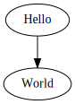
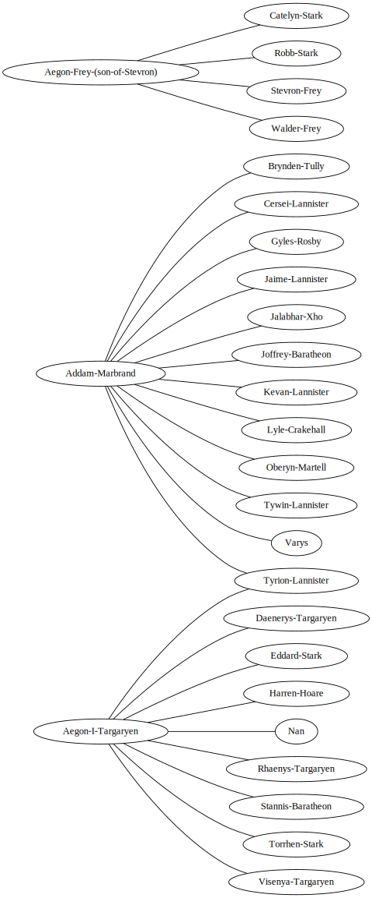

Graphviz example¶
An example of graph visualization with Graphviz.
import deetly
from graphviz import Digraph, Graph
import pandas as pd
# Create datastory
package = {
"name":"Example graph with graphviz",
"keyword": ["example, graph, graphviz"]
}
ds = deetly.story(package)
g = Digraph('G')
g.edge('Hello', 'World')
g

ds.graphviz(g.source, "Graphviz Hello World example")
g = Graph()
g.edge('run', 'intr')
g.edge('intr', 'runbl')
g.edge('runbl', 'run')
g.edge('run', 'kernel')
g.edge('kernel', 'zombie')
g.edge('kernel', 'sleep')
g.edge('kernel', 'runmem')
g.edge('sleep', 'swap')
g.edge('swap', 'runswap')
g.edge('runswap', 'new')
g.edge('runswap', 'runmem')
g.edge('new', 'runmem')
g.edge('sleep', 'runmem')
g
ds.graphviz(g.source, "Graphviz process example")
g = Digraph()
g.attr(rankdir='LR', size='8,5')
g.attr('node', shape='doublecircle')
g.node('LR_0')
g.node('LR_3')
g.node('LR_4')
g.node('LR_8')
g.attr('node', shape='circle')
g.edge('LR_0', 'LR_2', label='SS(B)')
g.edge('LR_0', 'LR_1', label='SS(S)')
g.edge('LR_1', 'LR_3', label='S($end)')
g.edge('LR_2', 'LR_6', label='SS(b)')
g.edge('LR_2', 'LR_5', label='SS(a)')
g.edge('LR_2', 'LR_4', label='S(A)')
g.edge('LR_5', 'LR_7', label='S(b)')
g.edge('LR_5', 'LR_5', label='S(a)')
g.edge('LR_6', 'LR_6', label='S(b)')
g.edge('LR_6', 'LR_5', label='S(a)')
g.edge('LR_7', 'LR_8', label='S(b)')
g.edge('LR_7', 'LR_5', label='S(a)')
g.edge('LR_8', 'LR_6', label='S(b)')
g.edge('LR_8', 'LR_5', label='S(a)')
g
ds.graphviz(g.source, "Graphviz finite state machine example")
g = Digraph()
g.attr(compound='true')
with g.subgraph(name='cluster0') as c:
c.edges(['ab', 'ac', 'bd', 'cd'])
with g.subgraph(name='cluster1') as c:
c.edges(['eg', 'ef'])
g.edge('b', 'f', lhead='cluster1')
g.edge('d', 'e')
g.edge('c', 'g', ltail='cluster0', lhead='cluster1')
g.edge('c', 'e', ltail='cluster0')
g.edge('d', 'h')
g
ds.graphviz(g.source, "Graphviz clustered example")
df_edges = pd.read_csv("https://raw.githubusercontent.com/mathbeveridge/asoiaf/master/data/asoiaf-all-edges.csv")
df_nodes = pd.read_csv("https://raw.githubusercontent.com/mathbeveridge/asoiaf/master/data/asoiaf-all-nodes.csv")
df_nodes.head(1)
| Id | Label | |
|---|---|---|
| 0 | Addam-Marbrand | Addam Marbrand |
df_edges.head(1)
| Source | Target | Type | id | weight | |
|---|---|---|---|---|---|
| 0 | Addam-Marbrand | Brynden-Tully | Undirected | 0 | 3 |
df_top_nodes = df_nodes.head(3)
node_list = df_top_nodes["Id"].unique().tolist()
df_top_edges = df_edges[df_edges['Source'].isin(node_list)]
g = Graph()
g.attr(rankdir='LR', size='8,16')
for i in range(len(df_top_edges)):
edge = df_top_edges.iloc[i]
g.edge(edge['Source'], edge['Target'])
g

ds.graphviz(g.source, "Game of Thrones")
Publish¶
ds.publish()
Publishing story Example graph with graphviz to the examples space...
Published at: https://public.deetly.com/examples/50be40b0ba5420041fd4ab33b6f5e184